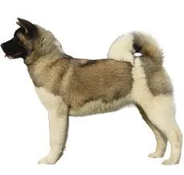

Welcomes both Health and Well Being into your home!
Origin: Japan
Group: Utility
Height: 28-32 Inches
Weight: 34-54 Kg
Life Span: 10 to 12 years
Origin of Name:
Akita, the name draws its inspiration from
the place where it was developed in.
It was bred in the northernmost region in the island Honshu
in the Akita prefecture.
The ancestry maybe still shrouded in history but the name is
something that everyone is certain about.
